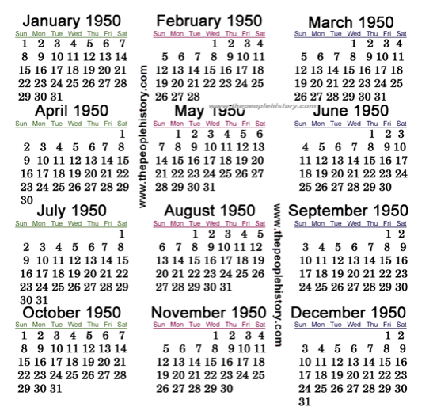

1950 was the start of the fast changes that would be seen in the next 2 decades , the great depression was becoming a faint memory and families were moving out to the suburbs, kids watched howdy doody on 12 inch black and white TV sets and spent Saturday afternoons watching cartoons at Cinema matinees , times were gentler with little violence and the consumer revolution was about to start in a big way, and the man of the household became the sole breadwinner. The median family income was $3,300 a year and milk was still delivered to the doorstep.
